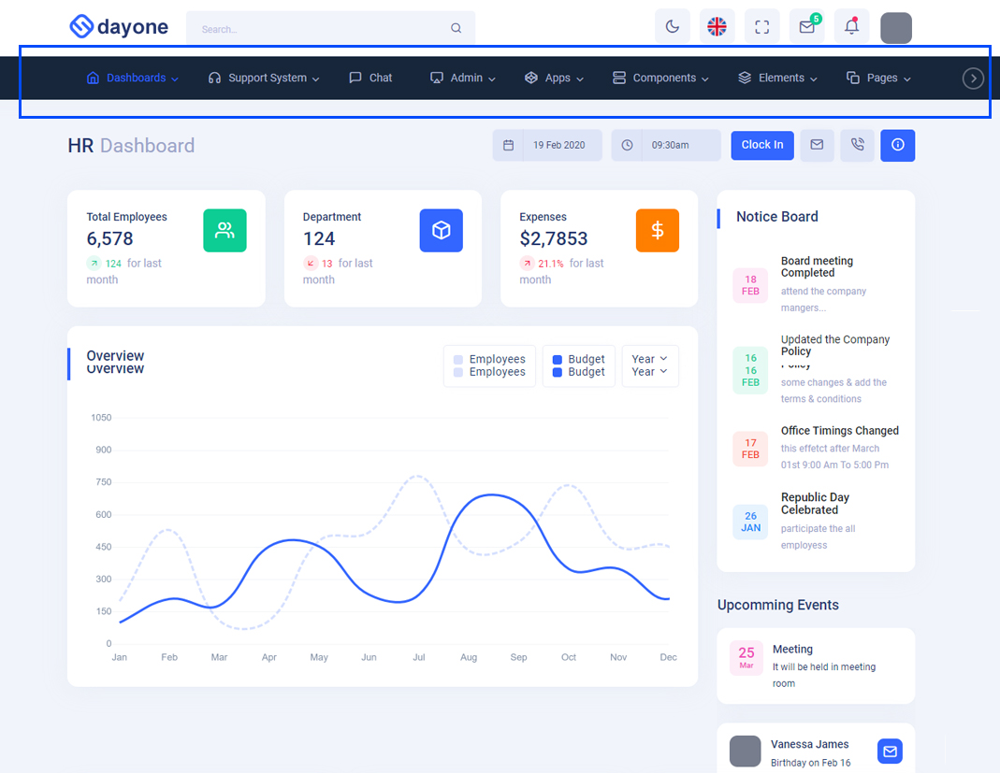
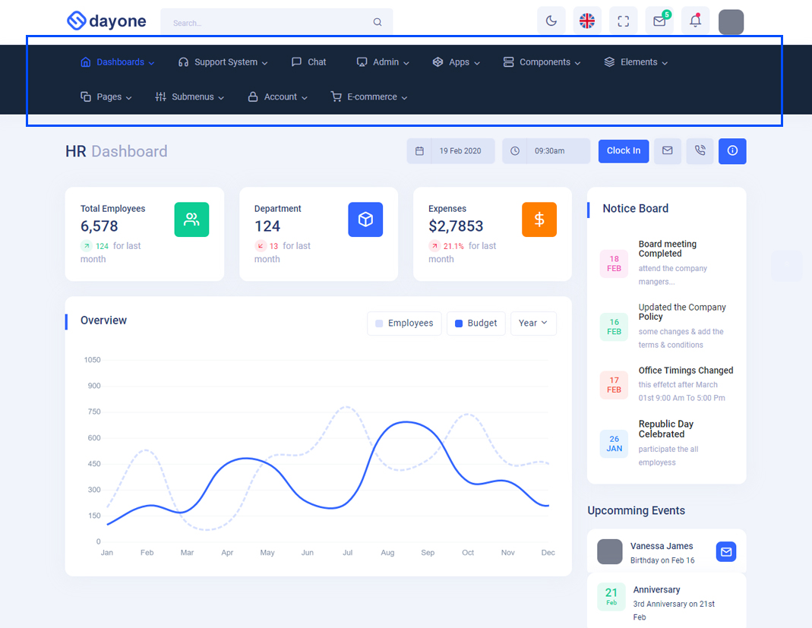

Dayone - Laravel Multipurpose Admin & Dashboard Template
Dashboard
Welcome to Dayone - Laravel Multipurpose Admin & Dashboard Template
- Created Date: 06/july/2022
- Author: Spruko
- Company: Spruko Technologies Private Limited
- Support: support@spruko.com
Thank you for purchasing our admin template. Feel free to contact us any time. We have a best dedicated team to provide you the best support. If you have any queries please contact us through live chat or email:- sprukotechnologies@gmail.com
Introduction Welcome to Dayone - Laravel Multipurpose Admin & Dashboard Template
Dayone is a responsive HTML based Laravel template, With these template formats,
it's very easy to
create
a presence and grab someone's attention around the web page
because the template is built using HTML5, CSS3, Bootstrap 5 framework and with
Sass.
So
please before you start working with the template take a quick look on the
documentation.
So that you can easily built your website.
If You Love Our Template Design Please don't forget to rate it. Thank you so much! 😊
Template Description
Dayone– is a Laravel Multipurpose Admin & Dashboard template using modern and minimal design. It is fully flexible user-friendly and responsive. Dayone admin template is powered with HTML 5, SASS, & Bootstrap 5 which looks great on Desktops, Tablets, and Mobile Devices. This Template Includes 240+ blade.php Pages & 75+ Plugins more UI elements . No Need to do hard work for this template customization. We already designed it and you can easily design your website just how you like it. Advanced Form-Elements like Date pickers, form elements are included. This template using Bootstrap4 framework. This admin template is fully 100% Premium Admin Templates quality. This template designed for using HTML5,CSS3,Jquery. After Purchased this template you will get All PHP files,CSS, Scss and JS Files.
It has super clean flat user interface admin Backend design, easy customizable components and widgets.The Template comes with a awesome unique design also we ensure you can easily design admin template.
it is a fully responsive layout for all type of devices. Works on all major web browsers, Desktop, iPhone, iPad, Tablet and all other smart phone devices
Once you Purchase Dayone – Laravel Admin Panel Template, you will be able to get free download of all future updates.
Template Features
- 7 Types Dashboards
- 240+ blade.php Pages
- Bootstrap 5 Responsive Framework
- Well Commented Code
- 24 * 7 Professional Company Support
- Regular Updates
- 75+ Plugins
- 7 types of Charts
- Select2
- Mail Inbox
- 11 Types of Icons
- File upload
- Message Chat
- Form Elements
- Moth & Date & Year Range Pickers
- FormAdvanced Elements
- Data Tables
- Lockscreen Page
- Error Page
- Under Construction Page
- User Profile
- Draggable cards
- Images-comparison
- Easy to customize
- More Widgets
- Invoice Page
- Pricing Tables
- Very Easy to Create your Own Site
- Neat, clean and simple design
- W3C Validated
Minimum Requirements
- PHP >= 8.0 or Newer
- Laravel >= 9 or Newer
- Livewire >= 2.10
- Ctype PHP Extension
- OpenSSL PHP Extension
- Fileinfo PHP extension
- PDO PHP Extension
- Mbstring PHP Extension
- Tokenizer PHP Extension
- XML PHP Extension
- JSON PHP Extension
Installation Process of Composer
Note: The clear documentation of PDF is given on How To Run Laravel Project In Localhost - For Beginners. Please Check out the PDF before running the project.
In order to run Laravel we need to install composer by the following steps
Steps to Download & Installation of Composer
Step1: Please visit the Official Web Site of the Composer www.getcomposer.org
Step2:Click on the Download option
Step3: Click on the Composer-Setup.exe you are done with download
Step4: Now Right click on the Composer-Setup.exe file and select Run as administrator click on Yes
Step5: You'll be getting two options click as per your choice
Step6: I choose Recommended option here and if your developer you can check the box of the Developer Mode
Step7: And click on the Next button please make sure of installation path and then click Next
Step8: You'll be asked to enter proxy url please skip the step and click on the Next button
Step9: Please make sure with the PHP Version it should not be less than 8.0v, here we used 8.o.13 Version and then click on the next button
Step10: To confirm that Composer is installed in your system then type Composer in command prompt (if you are using XAMPP then go to C:\xampp\htdocs location and type composer)
Installation Process Of Laravel
Here we are using "Composer" to download "Laravel" packages
Note : This installation is shown based on XAMPP server..
- Open command prompt, find the path of your XAMPP that is installed in your system.
- Go to Example:
C:\xampp\htdocs>path in command prompt. - Now type the following command line
composer create-project laravel/laravel my-projectand hit enter to install the Laravel Packages in your "htdocs" folder. - Now your downloading is started please wait for sometime to download all the necessary packages
- Once you are redirected to the
C:\xampp\htdocs>path then you are sucessfully installed laravel
Note: If you have any further queries in installation please refer to the official websites Click here
After installation run following command to get laravel development server
php artisan serve
Installation Instructions For both CPANEL’S and FTP
Installation Instructions
Upload the Project that you have purchased in below directory based on your server
FTP Uploading Process
-
Access FTP:
- Login to your FTP server using your login credentials provided by your hosting provider. Upload Project Files:
- Now extract the project folder that you have received, in any of your directories
- Now navigate to that directory using FTP panel and upload the project in Path: public_html/ directory in your FTP server .
- Once the uploading completes you can access your domain Example: www.example.com
cPanel Uploading Process
-
Access cPanel:
- Login to your cPanel server using your login credentials provided by your hosting provider. Upload Project Files:
- Once you successfully accessed your cPanel dashboard, navigate and click on File Manager
- Now open public_html and click on Upload
- Here you can select your zipped project folder or you can simply drag and drop your zipped project folder, once the uploading is completed go back to the public_html folder
- In the public_html folder, you will find your zipped project folder now you need to extract that project folder
- Once the extraction is completed you can access your domain Example: www.example.com
The Basic Structure Of Laravel Project
├── app
├── bootstrap
├── config
├── database
├── lang
├── public
├── resources
├── routes
├── storage
├── tests
├── vendor
├── .editorconfig
├── .env
├── .env.example
├── .gitattributes
├── .gitignore
├── .htaccess
├── .styleci.yml
├── artisan.File
├── composer.json
├── composer.lock
├── package.json
├── package-lock.json
├── phpunit.xml
├── README.md
└── webpack.mix.js
How to Upgrade Larvel Version
If you want to Upgrade laravel version, Please follow the below steps, if not you can skip this procedure.
Step 1:
Replace below Dependency versions in composer.json file which is placed in root directory
- php:- ^8.0
- fideloper/proxy:- ^4.4
- fruitcake/laravel-cors:- ^2.0
- guzzlehttp/guzzle:- ^7.4.1
- laravel/framework:- ^8.54
- nunomaduro/collision:- ^5.10
- phpunit/phpunit:- ^9.5.10
- laravel/tinker:- ^2.6
- "livewire/livewire": "^2.8"
Step 2:
Delete vendor folder
Step 3:
Set your project root path in command prompt and run the following command line in command prompt.
Composer update
How to Run Laravel Project in localhost
If you have installed XAMPP on your machine then please follow the below steps
Step:1 Quick view of Installations
1. Download and Install the Composer from official site https://getcomposer.org/
2. Install Laravel by using Composer as mentioned in the installation process above.
Step:2 Run project
1. Now open Xampp and launch the Apache server by clicking the start button.
2. Extract the zip folder of the laravel project in the path: EX: C:\xampp\htdocs\ that you have received after purchase.
3. Once the extraction is completed, type the localhost url in the browser to access the project. Example: http://localhost/my-project/.
4. Another process for accessing the laravel project, open command prompt or terminal and set your project root path: Example: C:\Users\my-project>
5. And run the command line: php artisan serve in the terminal
6. Laravel development server started: http://127.0.0.1:8000, now type the url in the browser to access the project.
How to Use Laravel Mix
In order to use laravel Mix you need to install Node.js in your systemRecommended LTS (long term support) version of Node.js.
Download latest version of node.js from nodejs.org
Install Node.js using .exe downloaded file.
To check your node version, run node -v in a terminal/console window (cmd)
1. Go to your project folder and there you will find a file called package.json.
2. Open the file in your editor and make sure that all the dependencies are correct as shown below
- "axios": "^0.25",
- "browser-sync": "^2.27.10",
- "browser-sync-webpack-plugin": "^2.3.0",
- "laravel-mix": "^6.0.6",
- "lodash": "^4.17.19",
- "postcss": "^8.1.14",
- "sass": "^1.52.3",
- "sass-loader": "^12.1.0",
3. And now set your project root path in terminal or command prompt Example: cd C:\Users\Admin\Desktop\my-project and type the below command line.
npm install
4. Wait until all the dependencies are downloaded to your project folder.
5. Now you can see the downloaded folder with the name of node_modules in your project folder.
6. Now in order to Compile Assets (Mix) first, you need to run development mode.
7. Set your project root path and type the below command line.
npm run development
8. Once the development mode starts you can customize your assets
9. After your project is set into Development Mode you need not run the Development Mode, again and again, you can simply run the below command line to compile your assets.
npm run watch
10. Once you completed with the customization work you need to run your project in Production Mode in order to run Production Mode run the below command line
npm run production
1. Go to your project folder and there you will find a folder called resources in the resources folder you will see assets.
2. In the assets folder you will see images, js, plugins, scss and custom-theme folders, and in the case of RTL version images, js, plugins, scss-rtl and custom-theme.
Assets Folder Structure
├── public/
| ├── assets
| | ├── css
| | ├── images
| | ├── js
| | ├── plugins
| | └── switcher
| ├── .htaccess
| ├── favicon
| ├── index.php
| ├── mix-manifest.json
| └── robots.txt
├── resources/
| ├── assets
| | ├── css
| | ├── images
| | ├── js
| | ├── plugins
| | ├── scss
| | └── switcher
| ├── views
| | ├── layouts/
| | | ├── components/
| | | ├── masters/
| | | ├── support-system/
| | | └── app.blade files
| | └── livewire/ (240+ blade.php files)
3. Now you can compile or customize your assets using scss and js files that are present in the resources/assets folder.
4. Once the changes made in the files in order to apply those changes to your template you need to type the below command in the same terminal or command prompt that you have set your project root path.
npm run dev (or) npm run watch
NOTE: Both commands will performs the same actions but the difference is that npm run dev will only perform at once you've started it and stops after compiling, where as npm run watch will starts compiling after you've started it and it won't stop until you stop it.
5. npm starts Compiling all your scss, css, js, images, landing and plugins that are present in resources folder.
6. And all the compiled files of scss, css, js, images, landing, and plugins folders are copied to your public/assets css, js, images, landing, and plugins folders respectively.
Note 1: While compiling assets, scss files are converted to css and js filse are converted to js files.
Note 2:plugins, images and landing folders are directly copied into assets folder and all the complied files and folders are seen in your public folder with the name of assets as shown in the above folder structure.
How to install Livewire
- Basic requirements to install Livewire
- --> PHP 8.0 or higher
- --> Laravel 8.0 or higher
- Install LiveWire using composer.
- Set your project root path in your console or terminal and type below command line.
- To create component using LiveWire set your project root path in your console and type below command line.
- Now two new files were created in your project: referral link LiveWire Component
- resources/views/livewire/example.blade.php
- Here we used Livewire to create Components and View files (i.e example.php and example.blade.php files).
composer require livewire/livewire
php artisan make:livewire example
app/Http/Livewire/example.php is the Component file and Note:There are total 240+ php and blade.php files created by Livewire.
How to Use BrowserSync
- The BrowserSync is a built-in feature in this Dayone Laravel project.
- The BrowserSync dependency is downloaded automatically with node_modules when you run npm install.
- In order to use BrowserSync you need to set your domain as shown in the below root path.
- Open your project folder and scroll down there you will find a file name called webpack.mix open the file in your favourite editor.
- Now scroll down there you will find mix.browserSync('http://127.0.0.1:8000'); here we used http://127.0.0.1:8000 is the default domain of php artisan serve but you can use your own domain in place of http://127.0.0.1:8000 BrowserSync.
- Once you set your domain you need to run your project in server mode, set your project root path in console or terminal and run the below command.
- And to open your project in your browser you need to run the below command.
- If you want to ignore Browser-Sync process then, please navigate to the root project there you will find webpack.mix.js file, open that file in an editor and scroll-down there you will find "mix.browserSync('http://127.0.0.1:8000');" please comment or remove that particular line now you are done. Now you can use your project without browser sync.
php artisan serve
npm run watch
Note:First you need to set your Domain as shown above and you need to run your project in server mode (php artisan serve).
Version
- php:- ^8.0
- laravel/framework:- ^9.7
- "livewire/livewire": "^2.10.5"
- laravel-mix: 6.0.6
- guzzlehttp/guzzle:- ^7.2
- laravel/tinker:- ^2.7
- phpunit/phpunit:- ^9.0
Over All Folder Structure
├── app/
| ├── Console
| ├── Exceptions
| ├── Http
| | ├── Controllers
| | ├── Livewire (240+ php files)
| | ├── Middleware
| | └── Kernel.php
| ├── Models
| └── Providers
├── bootstrap/
├── config/
├── database/
├── public/
| ├── assets
| ├── .htaccess
| ├── favicon
| ├── index.php
| ├── mix-manifest.json
| └── robots.txt
├── resources/
| ├── assets
| └── views/
| ├── layouts/
| | ├── components/
| | | ├── app-header.blade.php
| | | ├── app-header1.blade.php
| | | ├── app-sidebar.blade.php
| | | ├── custom-scripts.blade.php
| | | ├── custom-styles.blade.php
| | | ├── custom-switcher.blade.php
| | | ├── footer.blade.php
| | | ├── modal.blade.php
| | | ├── right-sidebar.blade.php
| | | ├── scripts.blade.php
| | | ├── styles.blade.php
| | | ├── switcher.blade.php
| | | ├── switcher-scripts.blade.php
| | | └── switcher-styles.blade.php
| | ├── masters/
| | | ├── clientmaster.blade.php
| | | ├── commonmaster.blade.php
| | | ├── empmaster.blade.php
| | | ├── hrmaster.blade.php
| | | ├── jobmaster.blade.php
| | | ├── projectmaster.blade.php
| | | ├── supadminmaster.blade.php
| | | └── taskmaster.blade.php
| | ├── support-system/
| | | ├── landing-footer.blade.php
| | | ├── landing-header.blade.php
| | | ├── landing-header1.blade.php
| | | ├── mobile-header.blade.php
| | | ├── modal.blade.php
| | | ├── onlinesletter.blade.php
| | | ├── scripts.blade.php
| | | ├── spfooter.blade.php
| | | ├── styles.blade.php
| | | └── switcher.blade.php
| | ├── app.blade.php
| | ├── clientappp.blade.php
| | ├── customapp.blade.php
| | ├── empapp.blade.php
| | ├── hrapp.blade.php
| | ├── jobapp.blade.php
| | ├── projectappp.blade.php
| | ├── supadminapp.blade.php
| | ├── supportappapp.blade.php
| | ├── supportlanding-app.blade.php
| | ├── taskapp.blade.php
| | └── theme.blade.php
| └── livewire/ (240+ blade.php files)
├── routes/
| ├── api.php
| ├── channels.php
| ├── console.php
| └── web.php
├── storage
├── tests
├── vendor
├── .editorconfig
├── .env
├── .env.example
├── .gitattributes
├── .gitignore
├── .htaccess
├── .styleci.yml
├── artisan.php
├── composer.json
├── composer.lock
├── package.json
├── package-lock.json
├── phpunit.xml
├── README.md
├── server.php
└── webpack.mix.js
Blade View
Blade is a simple, yet powerful templating engine provided with Laravel.
@extends('layouts.app')
@section('content')
--------created a section called content--------@endsection
--------get content data into master file--------
@yield('content')
SWITCHER?
If you want to add switcher to your template follow the below process.
How to add Switcher to the Template?
Go to root path: resources/views/layouts/masters open commonmaster.blade.php in that file, below the body tag, include the switcher path given below.
Switcher Path:
<!-- SWITCHER -->
@include('layouts.components.switcher')
<!-- SWITCHER -->
EX:
<body class="app sidebar-mini ltr">
<!-- SWITCHER -->
@include('layouts.components.switcher')
<!-- SWITCHER -->
Go to root path: resources/views/layouts/components open "styles.blade.php" file and add switcher css links given below.
Add Switcher CSS:
<!-- INTERNAL SWITCHER CSS -->
<link href="{{asset('assets/switcher/css/switcher.css')}}" rel="stylesheet" />
<link href="{{asset('assets/switcher/demo.css')}}" rel="stylesheet" />
Go to root path: resources/views/layouts/components open "scripts.blade.php" file then add switcher js link given below.
Add SWITCHER JS:
<!-- SWITCHER JS -->
<script src="{{asset('assets/switcher/js/switcher.js')}}"></script>
Go to root path: resources/views/layouts/components open "scripts.blade.php" file and then change custom.js link to custom1.js link as shown below.
change custom js link:
Before :
<!-- CUSTOM JS -->
<script src="{{asset('assets/js/custom.js')}}"></script>
After :
<!-- CUSTOM1 JS -->
<script src="{{asset('assets/js/custom1.js')}}"></script>
NOTE: Custom1.js file is only used when you want to use switcher for your template.
Go to root path: resources/views/layouts/masters open "commonmaster.blade.php" file and then change app-header to app-header1 as shown below.
Before :
<!-- APP-HEADER -->
@include('layouts.components.app-header')
<!-- SWITCHER -->
After :
<!-- APP-HEADER-1 -->
@include('layouts.components.app-header1')
<!-- SWITCHER -->
NOTE: Please repeat the above switcher process for the remaing masters that are available in the path: resources/views/layouts/masters
How to add Switcher to the Coustom Pages?
Go to root path: resources/views/layouts open custom-app.blade.php in that file, below the body tag, include the switcher path given below.
Switcher Path:
<!-- SWITCHER -->
@include('layouts.components.custom-switcher')
<!-- SWITCHER -->
EX:
<body>
<!-- SWITCHER -->
@include('layouts.components.custom-switcher')
<!-- SWITCHER -->
Go to root path: resources/views/layouts/components open "custom-styles.blade.php" file and add switcher css links given below.
Add Switcher CSS:
<!-- INTERNAL SWITCHER CSS -->
<link href="{{asset('assets/switcher/css/switcher.css')}}" rel="stylesheet" />
<link href="{{asset('assets/switcher/demo.css')}}" rel="stylesheet" />
Go to root path: resources/views/layouts/components open "custom-scripts.blade.php" file then add switcher js link given below.
Add Switcher js:
<!-- SWITCHER JS -->
<script src="{{asset('assets/switcher/js/switcher.js')}}"></script>
Go to root path: resources/views/layouts/components open "custom-scripts.blade.php" file and then change custom.js link to custom1.js link as shown below.
change custom js link:
Before :
<!-- CUSTOM JS -->
<script src="{{asset('assets/js/custom.js')}}"></script>
After :
<!-- CUSTOM1 JS -->
<script src="{{asset('assets/js/custom1.js')}}"></script>
NOTE: Custom1.js file is only used when you want to use switcher for your template.
Go to root path: resources/views/layouts open custom-app.blade.php in that file, below the body tag, switcher-icon code given below process.
How to add Switcher to the Landing Page?
Go to root path: resources/views/layouts open supportlanding-app.blade.php in that file, below the body tag, include the switcher path given below.
Switcher Path:
<!-- SWITCHER -->
@include('layouts.support-system.switcher')
<!-- SWITCHER -->
EX:
<body class="main-content main">
<!-- SWITCHER -->
@include('layouts.support-system.switcher')
<!-- SWITCHER -->
Go to root path: resources/views/layouts/support-system open "styles.blade.php" file and add switcher css links given below.
Add Switcher CSS:
<!-- INTERNAL SWITCHER CSS -->
<link href="{{asset('assets/switcher/css/switcher.css')}}" rel="stylesheet" />
<link href="{{asset('assets/switcher/demo.css')}}" rel="stylesheet" />
Go to root path: resources/views/layouts/support-system open "scripts.blade.php" file then add switcher js link given below.
Add Switcher js:
<!-- SWITCHER JS -->
<script src="{{asset('assets/switcher/js/switcher.js')}}"></script>
Go to root path: resources/views/layouts/support-system open "scripts.blade.php" file and then change custom.js link to custom1.js link as shown below.
change custom js link:
Before :
<!-- CUSTOM JS -->
<script src="{{asset('assets/js/custom.js')}}"></script>
After :
<!-- CUSTOM1 JS -->
<script src="{{asset('assets/js/custom1.js')}}"></script>
NOTE: Custom1.js file is only used when you want to use switcher for your template.
Go to root path: resources/views/layouts open "supportlanding-app.blade.php" file and then change landing-header to landing-header1 as shown below.
Before :
<!-- LANDING-HEADER -->
@include('layouts.components.landing-header')
<!-- SWITCHER -->
After :
<!-- LANDING-HEADER-1 -->
@include('layouts.components.landing-header1')
<!-- SWITCHER -->
NOTE: Please repeat the above switcher process for the supportapp.blade.php that is available in the path: resources/views/layouts/supportapp.blade.php
Chart color
NOTE: If you want to change your chart colors according to the themecolors, then follow the process.(Skip this process if this is not your requirement).
How to replace your own chart with existing chart and change colors of that particular chart in Dashboard Page ?
Step1:
Go to root path: resources/assets/js/index.js in that js file you will find a function named as index "export function index()" inside of that function replace the old chart js data with your new chart js data,
in order to change your chart color according to your themecolor then add " myVarVal" or "any default color " (Ex:- myVarVal || "#6259ca") value to that particular color field based on your requirement.
Step2:
Navigate to root path: resources/assets/js/ and open themeColors.js in that js file you will find a function called "(function names() )"
In that function you will find
"if(document.querySelector('#chartLine') !== null){
index();
}"
Then change it's id name based on the id that you've used for your particular chart.
Ex: How do I modify the Id in the "themeColors.js" file?
-
Before :
"if(document.querySelector('#chartLine') !== null){
index();
}"
After :
"if(document.querySelector('# your chart id') !== null){
index();
}"
How to add your new chart and change colors of that new chart according to your themecolor in Other Pages ?
Note : This process is only for adding your new chart to other pages.(Skip this process if this is not your requirement)
If you want to change the color of your chart with respect to the themecolor you have to follow the below steps.
Step 1:
If you want to add any chart to any other page then follow the below process.
Open js file of the particular chart that you wanted to add, in that js file (for example in my case: mychart.js), and inside of that js file create a new function with " unique " name (for example in my case: myFunction() ), and then place the chart js content inside of that function.
Note: If there is more than one chart then you need to create different functions for different charts respectively.
Ex-1: myFunction1() {
chart js1 content
}
Ex-2:
myFunction2() {
chart js2 content
}
Step 2:
Navigate to root path: resources/assets/js/themeColors.js in that js file you will find a function called "(function names() )"
In that function you will find
"if(document.querySelector('#sales-summary') !== null){
sales-summary();
}"
Below this condition add a new condition with the "id name and function name" that you've used in your chart js (Ex: mychart.js)
Ex: " if(document.querySelector('# your chart id') !== null){
myFunction(); =>created function for the above id
}"
Step 3:
If you want to change your chart (Ex: mychart.js) color according to your themecolor then follow the below process
Ex : Go to root path: resources/assets/js/mychart.js in that js file you've already created a function (Ex: myFunction() ) inside of that function there are different color values based on the chart. so, if you want to change the color then add " myVarVal " or "any default color" value (Ex:- myVarVal || "#6259ca")to that particular color field based on your requirement.
FAQ'S
1. How to Change Font Style ?
Step 1:
Go To _fonts.scss (resources/assets/scss/custom/fonts/_fonts.scss )
if you want to change another font-family Go to the site Google Fonts And Slect One font Family and import In to style.css file
How to Select Font Family
Example:

Step 2:
And paste Your Selected font-family in _fonts.scss
Example:
@import url("https://fonts.googleapis.com/css?family=Roboto:300,400,500,700,900");
Step 3:
And add the Your Selected font-family in _bootstrap-styles.scss(resources/assets/scss/bootstrap/_bootstrap-styles.scss)
Example:
body {
margin: 0;
font-family: 'Roboto', sans-serif;
font-size: 14px;
font-weight: 400;
line-height: 1.5;
color: #263871;
text-align: left;
background: #f1f4fb;
min-height: 100vh;
flex-direction: column;
justify-content: flex-start;
position: relative;
overflow-y: scroll;
}
NOTE: You must perform npm run dev command after changing or modifying the content in assets folder, otherwise those changes you've made will not be applied to your template.
2. How to Change Sidemenu and Header icon?
NOTE :Sidemenu & Header Icons used in Noa are fromhttps://iconscout.com/unicons (Thin Line Icons).
Changing Sidemenu Icon :
You can change sidemenu icon by replacing svg code of selected icon with svg code of required icon and add class="side-menu__icon" for that svg icon
Changing Header Icon :
You can change Header icon by simply replacing svg code of selected icon with svg code of required icon.
3. How to Change Primary Color ?
Step 1:
Go To _bootstrap-styles.scss (resources/assets/scss/bootstrap/_bootstrap-styles.scss )
You will find --primary-bg-color: #3366ff; , where you can simply change color code to change primary color
How to Change Primary Color
Example:

Simply you can also change color for primary-bg-hover:#255bfb; & --primary-bg-border:#255bfb; , where you can simply change color code to change them
NOTE: You must perform npm run dev command after changing or modifying the content in assets folder, otherwise those changes you've made will not be applied to your template.
4. How to Change Logo ?
Go To "resources/assets/images/brand" folder and replace Previous logo with New Logo within the given image size.
NOTE: Please don't increase logo sizes, replace the logo within given image size, otherwise the logo will not fit in particular place and it disturbs the template design.
NOTE: You must perform npm run dev command after changing or modifying the content in assets folder, otherwise those changes you've made will not be applied to your template.
5. How to Enable RTL version?
To enable RTL you have to open custom.js file present in (resources/assets/js/custom.js) file and remove comments for rtl as shown in below
// $('body').addClass('rtl');
rtl version as shown below
$('body').addClass('rtl');
NOTE: You must perform npm run dev command after changing or modifying the content in assets folder, otherwise those changes you've made will not be applied to your template.
6. How to Enable Darktheme?
To enable Darktheme you have to open custom.js file present in (resources/assets/js/custom.js) file and remove comments for Drak Theme as shown in below
// DARK THEME START
// $('body').addClass('dark-mode');
// DARK THEME END
dark-theme as shown below
// DARK THEME START
$('body').addClass('dark-mode');
// DARK THEME END
NOTE: You must perform npm run dev command after changing or modifying the content in assets folder, otherwise those changes you've made will not be applied to your template.
7. How to change Dark Background Color?
Step 1:
Go To _bootstrap-styles.scss (resources/assets/scss/_variables.scss )
You will find --dark-body: #151636; , where you can simply change color code to change dark background color
How to change Dark Background Color
Example:

NOTE: You must perform npm run dev command after changing or modifying the content in assets folder, otherwise those changes you've made will not be applied to your template.
8. How to Enable Transparent Background Image?
Please follow the below steps to enable Transparent Background Image
Step 1 :
To enable Transparent Background Image you have to open custom.jsfile present in (resources/assets/js/custom.js) file and remove comments for bg-img1 in Transparent Bg-Image Stylesection as shown in below
// Bg-Image1 Style
// $('body').addClass('bg-img1');
// $('body').addClass('transparent-mode');
Step 2 :
Remove the comments to enablebg-img1 as shown below
// Bg-Image1 Style
$('body').addClass('bg-img1');
$('body').addClass('transparent-mode');
Go To "resources/assets/images/photos" folder and replace your image with Previous image(bg-img1) within in image size.
Note: Please don't increase image size. Replace your image within given image size. otherwise the image will not fit in particular place it disturbs the template design.
9. How to Enable Color-Header?
To enable Color-header you have to open custom.js file present in (resources/assets/js/custom.js) file and remove comments for color-header as shown in below
// COLOR HEADER START
// $('body').addClass('color-header');
// COLOR HEADER END
color-header as shown below
// COLOR HEADER START
$('body').addClass('color-header');
// COLOR HEADER END
NOTE: You must perform npm run dev command after changing or modifying the content in assets folder, otherwise those changes you've made will not be applied to your template.
10. How to Enable Dark-Header?
To enable dark-header you have to open custom.js file present in (resources/assets/js/custom.js) file and remove comments for dark-header as shown in below
// DARK HEADER START
// $('body').addClass('dark-header');
// DARK HEADER END
dark-header as shown below
// DARK HEADER START
$('body').addClass('dark-header');
// DARK HEADER END
NOTE: You must perform npm run dev command after changing or modifying the content in assets folder, otherwise those changes you've made will not be applied to your template.
11. How to Enable Light-Header?
To enable light-header you have to open custom.js file present in (resources/assets/js/custom.js) file and remove comments for light-header as shown in below
// LIGHT HEADER START
// $('body').addClass('light-header');
// LIGHT HEADER END
light-header as shown below
// LIGHT HEADER START
$('body').addClass('light-header');
// LIGHT HEADER END
NOTE: You must perform npm run dev command after changing or modifying the content in assets folder, otherwise those changes you've made will not be applied to your template.
12. How to Enable Gradient-Header?
To enable Gradient-header you have to open custom.js file present in (resources/assets/js/custom.js) file and remove comments for gradient-header as shown in below
// GRADIENT HEADER START
// $('body').addClass('gradient-header');
// GRADIENT HEADER END
gradient-header as shown below
// GRADIENT HEADER START
$('body').addClass('gradient-header');
// GRADIENT HEADER END
NOTE: You must perform npm run dev command after changing or modifying the content in assets folder, otherwise those changes you've made will not be applied to your template.
13. How to Enable Light Menu?
To enable Light Menu you have to open custom.js file present in (resources/assets/js/custom.js) file and remove comments for light-menu as shown in below
light-menu as shown below
NOTE: You must perform npm run dev command after changing or modifying the content in assets folder, otherwise those changes you've made will not be applied to your template.
14. How to Enable Color Menu?
To enable Color Menu you have to open custom.js file present in (resources/assets/js/custom.js) file and remove comments for color-menu as shown in below
color-menu as shown below
NOTE: You must perform npm run dev command after changing or modifying the content in assets folder, otherwise those changes you've made will not be applied to your template.
15. How to Enable Dark Menu?
To enable Dark Menu you have to open custom.js file present in (resources/assets/js/custom.js) file and remove comments for dark-menu as shown in below
dark-menu as shown below
NOTE: You must perform npm run dev command after changing or modifying the content in assets folder, otherwise those changes you've made will not be applied to your template.
16. How to Enable Gradient Menu?
To enable Gradient Menu you have to open custom.js file present in (resources/assets/js/custom.js) file and remove comments for gradient-menu as shown in below
gradient-menu as shown below
NOTE: You must perform npm run dev command after changing or modifying the content in assets folder, otherwise those changes you've made will not be applied to your template.
17. How to Enable Boxed-Layout?
To enable layout-boxed you have to open custom.js file present in (resources/assets/js/custom.js) file and remove comments for boxed as shown in below
boxed as shown below
NOTE: You must perform npm run dev command after changing or modifying the content in assets folder, otherwise those changes you've made will not be applied to your template.
18. How to Enable Sidemenu-Icon-with Text?
To enable Sidemenu-Icon-with Text you have to open custom.js file present in (resources/assets/js/custom.js) file and remove comments for icon-text as shown in below
// ***** Icon with Text *****//
// $('body').addClass('icon-text');
// $('body').addClass('sidenav-toggled');
// if(document.querySelector('.icon-text').firstElementChild.classList.contains('responsive-log') !== true){
// icontext();
// }
sidemenu-icontext as shown below
// ***** Icon with Text *****//
$('body').addClass('icon-text');
$('body').addClass('sidenav-toggled');
if(document.querySelector('.icon-text').firstElementChild.classList.contains('responsive-log') !== true){
icontext();
// }
NOTE: You must perform npm run dev command after changing or modifying the content in assets folder, otherwise those changes you've made will not be applied to your template.
19. How to Enable Closed-Menu?
To enable Closed-Menu you have to open custom.js file present in (resources/assets/js/custom.js) file and remove comments for closed as shown in below
/// ***** closed menu *****//
// $('body').addClass('closed');
// $('body').addClass('sidenav-toggled');
Closed Sidemenu as shown below
// ***** closed menu *****//
$('body').addClass('closed');
$('body').addClass('sidenav-toggled');
NOTE: You must perform npm run dev command after changing or modifying the content in assets folder, otherwise those changes you've made will not be applied to your template.
20. How to Enable Icon Overlay
To enable Icon Overlay you have to open custom.js file present in (resources/assets/js/custom.js) file and remove comments for icon-overlay as shown in below
// ***** Icon-overlay *****//
// $('body').addClass('icon-overlay');
// $('body').addClass('sidenav-toggled');
sideicon-menu as shown below
// ***** Icon-overlay *****//
$('body').addClass('icon-overlay');
$('body').addClass('sidenav-toggled');
NOTE: You must perform npm run dev command after changing or modifying the content in assets folder, otherwise those changes you've made will not be applied to your template.
21. How to Enable Hover Submenu
To enable Hover Submenu you have to open custom.js file present in (resources/assets/js/custom.js) file and remove comments for hover-submenu as shown in below
// ***** Hover submenu *****//
// $('body').addClass('hover-submenu');
// $('body').addClass('sidenav-toggled');
// if(document.querySelector('.hover-submenu').firstElementChild.classList.contains('responsive-log') !== true){
// hovermenu();
// }
Hover Submenu as shown below
// ***** Hover submenu *****//
$('body').addClass('hover-submenu');
$('body').addClass('sidenav-toggled');
if(document.querySelector('.hover-submenu').firstElementChild.classList.contains('responsive-log') !== true){
hovermenu();
}
NOTE: You must perform npm run dev command after changing or modifying the content in assets folder, otherwise those changes you've made will not be applied to your template.
22. How to Enable Hover Submenu Style1
To enable Hover submenu style1 you have to open custom.js file present in (resources/assets/js/custom.js) file and remove comments for hover-submenu1 as shown in below
// ***** Hover submenu1 *****//
// $('body').addClass('hover-submenu1');
// $('body').addClass('sidenav-toggled');
// if(document.querySelector('.hover-submenu1').firstElementChild.classList.contains('responsive-log') !== true){
// hovermenu();
// }
Hover Submenu Style1 as shown below
// ***** Hover submenu1 *****//
$('body').addClass('hover-submenu1');
$('body').addClass('sidenav-toggled');
if(document.querySelector('.hover-submenu1').firstElementChild.classList.contains('responsive-log') !== true){
hovermenu();
}
NOTE: You must perform npm run dev command after changing or modifying the content in assets folder, otherwise those changes you've made will not be applied to your template.
23. How to Enable Horizontal Click Menu
To enable Horizontal layout you have to open custom.js file present in (resources/assets/js/custom.js) file and remove comments for horizontal as shown in below
// ***** Horizontal Click Menu ***** //
// $('body').addClass('horizontal');
Horizontal layout as shown below
// ***** Horizontal Click Menu ***** //
$('body').addClass('horizontal');
NOTE: You must perform npm run dev command after changing or modifying the content in assets folder, otherwise those changes you've made will not be applied to your template.
24. How to Enable Horizontal Hover Menu
To enable Horizontal Hover layout you have to open custom.js file present in (resources/assets/js/custom.js) file and remove comments for horizontal-hover as shown in below
// ***** Horizontal Hover Menu ***** //
// $('body').addClass('horizontal-hover');
Horizontal Hover layout as shown below
// ***** Horizontal Hover Menu ***** //
$('body').addClass('horizontal-hover');
NOTE: You must perform npm run dev command after changing or modifying the content in assets folder, otherwise those changes you've made will not be applied to your template.
25. How to Enable Horizontal or Horizantal Hover layout With Wrap Style
Open custom.js file present in resources/assets/js/custom.js in that file you will find below js, Horizontal (or) Horizontal Hover layout to enable wrap
style for Horizontal or Horizontal Hover
noWrap style is given as default horizontal menu style,if you want to change it to wrap style please follow below process.
$('#slide-left').addClass('d-none');
$('#slide-right').addClass('d-none');
// $('#slide-left').removeClass('d-none');
// $('#slide-right').removeClass('d-none');
if (document.querySelector('.horizontal').firstElementChild.classList.contains('login-img') !== true) {
document.querySelector('.horizontal .side-menu').style.flexWrap = 'nowrap'
Related Image:

wrap style:
ReplacenoWrap with wrap as
shown below and remove comments for $('#slide-left').addClass('d-none'); & $('#slide-right').addClass('d-none');
and add comments to $('#slide-left').removeClass('d-none'); & $('#slide-right').removeClass('d-none'); as shown below.
//$('#slide-left').addClass('d-none');
//$('#slide-right').addClass('d-none');
$('#slide-left').removeClass('d-none');
$('#slide-right').removeClass('d-none');
if (document.querySelector('.horizontal').firstElementChild.classList.contains('login-img') !== true) {
document.querySelector('.horizontal .side-menu').style.flexWrap = 'wrap'
Related Image:

Simply you can change noWrap with wrapto change the style of Horizontal or Horizontal Hover Menus
NOTE: You must perform npm run dev command after changing or modifying the content in assets folder, otherwise those changes you've made will not be applied to your template.
Sources
- Bootstrap FrameWork
- https://getbootstrap.com/
- Jquery
- https://jquery.com/
- Jquery Datepicker
- https://jqueryui.com/datepicker/
- Full Calendar
- https://fullcalendar.io/
- File Uploads
- https://www.jqueryscript.net/demo/jQuery-Plugin-To-Beautify-File-Inputs-with-Custom-Styles-Dropify/
- mcustomScrollbar
- http://manos.malihu.gr/jquery-custom-content-scroller/
- Select2
- https://select2.org/
- Jquery Timepicker
- https://jonthornton.github.io/jquery-timepicker/
- Bootstrap-wizard
- http://vinceg.github.io/twitter-bootstrap-wizard/
- Datatable
- https://datatables.net/examples/styling/bootstrap4
- Font Awesome Icons
- https://fontawesome.com/v4.7.0/icons/
- Material Design Icons
- https://materialdesignicons.com/
- Simpleline Icons
- https://simplelineicons.github.io/
- Feather Icons
- https://feathericons.com/
- Ionicons
- https://ionicons.com/
- Themify Icons
- https://themify.me/themify-icons
- Weather Icons
- https://erikflowers.github.io/weather-icons/
- Typicons Icons
- https://iconify.design/icon-sets/typcn/
- Material Svg Icons
- https://iconify.design/icon-sets/typcn/
- Bootstrap-Colorpicker
- https://github.com/bgrins/spectrum
- Sparkline Charts
- https://omnipotent.net/jquery.sparkline/#s-about
- Echart
- https://github.com/apache/echarts
- Morris Chart
- https://morrisjs.github.io/morris.js/
Font Used
Google fonts are used in the template. They are as follows: Google Fonts
All Images are used: Pexels.com